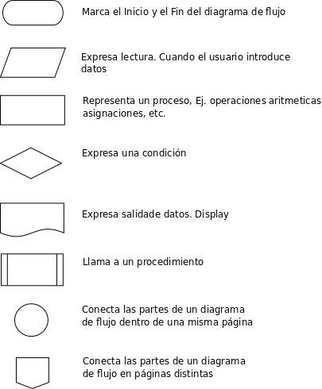

Fundamentos de Programción en JavaScript parte 2
Regresar al Inicio
Algoritmos y Diagramas de Flujo

Eventos
Manejador de eventos como atributo de HTML
Manejador de eventos semánticos
Manejador de eventos múltiple
¿Cómo determinamos si un número es par o impar?
Dame un número
Juguemos con las horas
Hola
Año Bisiesto
Reloj
Detener reloj
Alarma
Detener Alarma